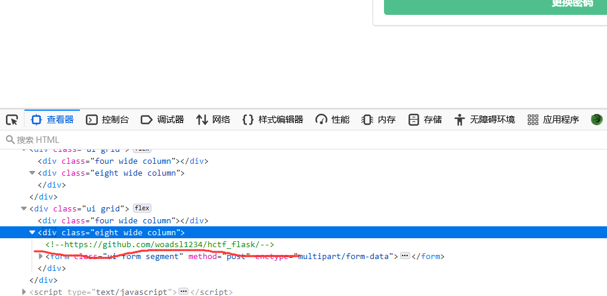
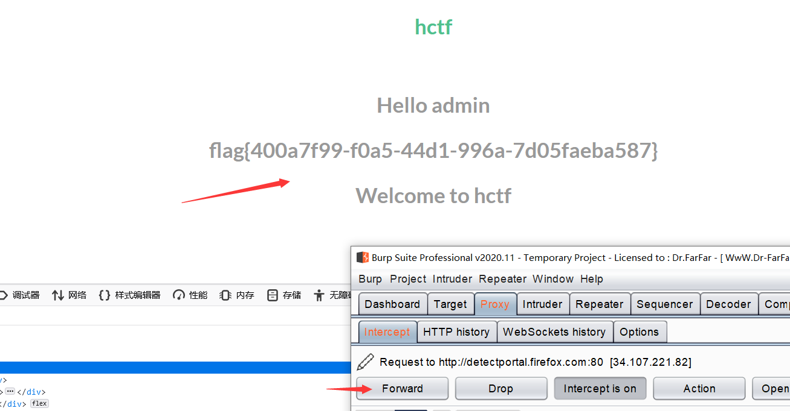

HCTF2018-admin 1
饭前一杯柠檬水
关于flask和session伪造：
- session 数据是保存到后端的数据库中
- session中的从狭义和广义上分：
（1） session，广义上 :
是一种机制：在前端当中存一个session_id ,在后端当中去保存
这份session的属性值，然后访问的时候只要能够带上这份session_id
的值，就可以知道之前保存的数据是什么。
整个的这种机制，是一种session机制
（2）session，狭义上 ：
只是仅仅保存到后端的session数据
在设置使用session时,必须要做一个配置：
即 flask的session中需要用到的秘钥字符串，可以是任意值
app.config[“SECRET_KEY”] = “任意的字符串”
- 如果没有设置session时，获取到的session就是None
flask 是非常轻量级的 Web框架 ，其 session 存储在客户端中，也就是说其实只是将相关内容进行了加密保存到session中，容易造成安全漏洞。和服务端的session不同，服务端的session保存在服务端中，依靠客户端cookie值中的sessionId来进行识别。
恰饭恰饭
其实一开始看到注册和登录的话想到的是SQL注入，但是抓包也观察了一下也并没有看到什么值得怀疑的注入点。到这其实就已经没有什么方向了，没有接触过session伪造的xiaofeiji，也就只能跟着大佬的wp做了。
食谱一：session欺骗
- 首先是查看一下源代码，发现：
提示不是admin用户，当我们去注册admin用户时发现是注册不成功的，随便注册一个账户进行登录成功之后在更改密码的选项框的源代码处也有一个提示：

- 下载一下看看，是一个项目，在 app\templates\index的代码下可以看到：
意思是只要session中得到的name的值等于admin的时候，就会输出flag。
- 这个时候就想到了session伪造。
对于flask框架，其session是以cookie的形式存储在客户端的，所以造成了session可读，我们只要用网上的session解密脚本就可实现读取，解密读取之后我们知道了它的格式。
所以得到一个网上找的解密脚本文件：
1 | #!/usr/bin/env python3 |
- 运行： python .py
得到所登录的admin3的session值：
1 | .eJw9kEGLwjAUhP_K8s4ebLWHFTwIqWWFvJDd2PJyEVdr06RxoSrRiP99uy54nRk-ZuYOm0NfnwzMzv2lHsGm3cPsDm_fMANRYMfjOiIrDbcy08oFjHngqrmiMp1Q6LUqrajkGP3KYaQgWJ5qry332iCTN8GaoCvdol11vBh0pg1VZYt_rEJ32qLThQyi4Deyi4koVo4qtEItMoryxtN15Mo4Um7KU57wmEdSNCa79KQWAdnSCLWbw2MEu1N_2Jx_XH18TUCbj1GhpepjyoeoZk2GnidaUeS29ILtrWDyOhSLZCkj--lIzp-41m-b-kX6St-jDP_OcesHA7Z73x4nMILLqe6fx0GSwOMXhxBvEw.YEitRw.m5gcaKeeM283A5I3MCojlN_Pyok |
- 我们需要将name的值改为admin，再进行session的加密，进行session的替换，应该就能得到成功登录admin账户得到flag了。
所以接下来进行更换加密操作：这里加密伪造需要知道secret_key.
- 将运行得到的session换到cookie中，进行放包：

- 在index页面得到flag。
参考
https://blog.csdn.net/wei18791957243/article/details/85237246
https://www.cnblogs.com/NineOne/p/14033379.html
https://blog.csdn.net/weixin_42271850/article/details/104932723
食谱二：unicode欺骗
然后我们发现在使用nodeprep.prepare函数转换时过程如下：
1 | ᴬᴰᴹᴵᴺ -> ADMIN -> admin |
- 假如我们注册ᴬᴰᴹᴵᴺ用户，然后在用ᴬᴰᴹᴵᴺ用户登录，因为在login函数里使用了一次nodeprep.prepare函数，因此我们登录上去看到的用户名为ADMIN，此时我们再修改密码，又调用了一次nodeprep.prepare函数将name转换为admin，然后我们就可以改掉admin的密码，最后利用admin账号登录即可拿到flag。
参考[HCTF-2018-admin]三种解法
https://blog.csdn.net/weixin_44677409/article/details/100733581